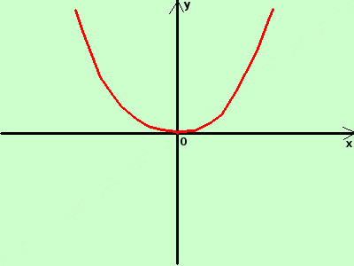
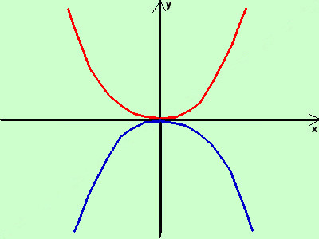

|
sviluppo tracciare il grafico della funzione opposta alla funzione y = x2  La funzione opposta di quella data e' y = - x2 considero il grafico della funzione y = x2 (in rosso) per avere il grafico della funzione opposta "ribalto" il grafico considerato attorno all'asse delle x  ottengo il grafico della funzione y = -x2 (in blu) |